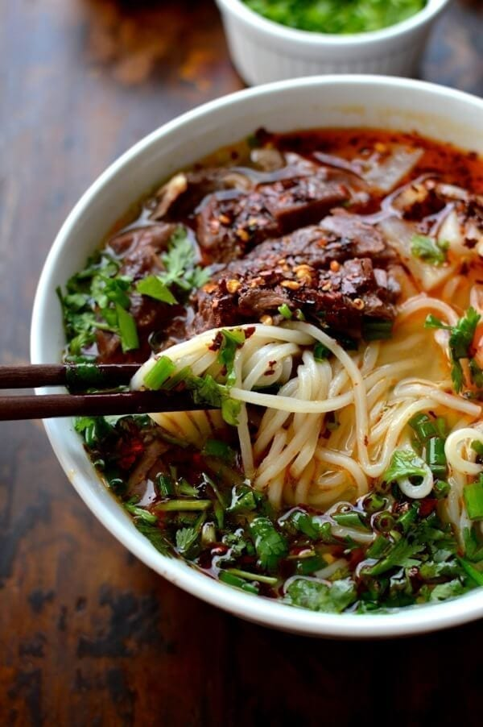
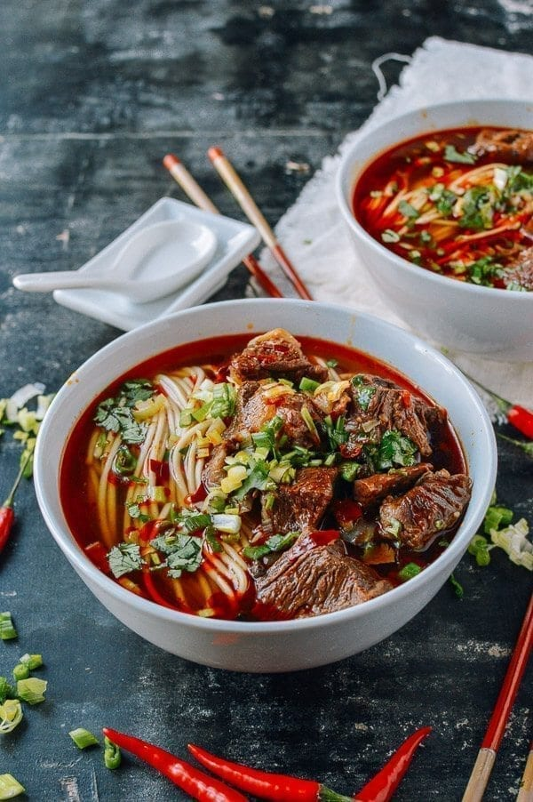
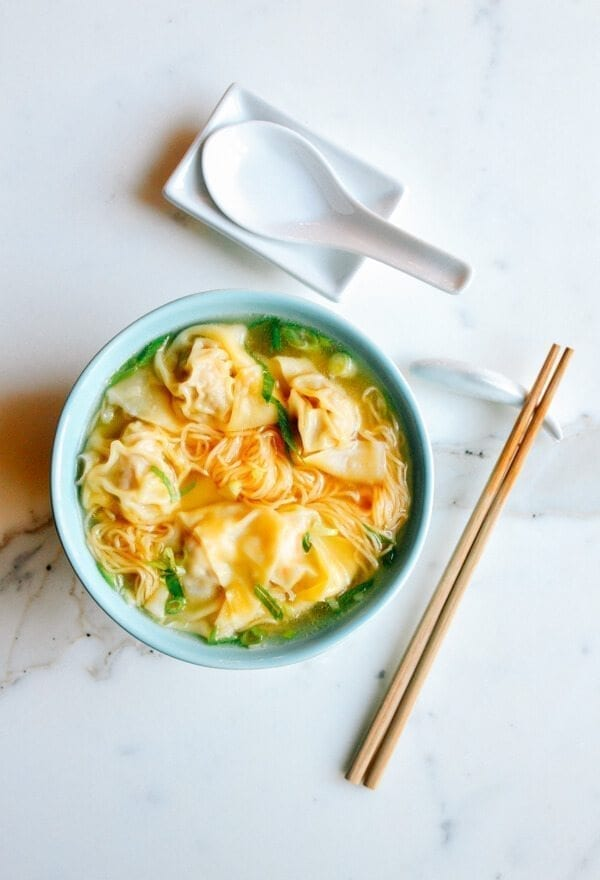

| Item |
Picture |
Price |
Description |
| Beef Chow Fun (Wide Rice Noodles) |
 |
$14.00 |
Our beef chow fun is a classic Cantonese noodle dish made with wide
rice noodles stir-fried with tender slices of beef, bean sprouts,
and scallions. It's a hearty and satisfying meal that's perfect
for any time of day.
|
| Dan Dan Noodles (Spicy Sichuan Noodles) |
 |
$14.50 |
These spicy Sichuan noodles are a must-try for any heat-seeker. Our
dan dan noodles are made with chewy wheat noodles tossed in a fiery
chili oil sauce, topped with ground pork, scallions, and peanuts for
an extra crunch.
|
| Hand-Pulled Noodles with Beef Soup |
 |
$16.50 |
Our hand-pulled noodles are made fresh to order, resulting in a chewy and
flavorful noodle that's unlike any other. Served in a rich beef broth with
tender slices of beef, this noodle soup is a comfort food classic that's
perfect for a cold day.
|
| Spicy Beef Noodle Soup |
 |
$16.50 |
Our spicy beef noodle soup is a hearty and flavorful dish that's perfect
for cold weather. Thin wheat noodles are served in a spicy broth with
tender slices of beef, bok choy, and other vegetables, resulting in a
satisfying and warming meal.
|
| Singapore-Style Curry Noodles) |
 |
$16.00 |
Our Singapore-style curry noodles are a spicy and aromatic dish that's
perfect for curry lovers. Thin wheat noodles are stir-fried with a flavorful
curry sauce, shrimp, chicken, and vegetables, resulting in a fragrant
and satisfying meal.
|
| Cantonese-Style Wonton Noodle Soup |
 |
$16.50 |
Our wonton noodle soup is a classic Cantonese dish that's simple but delicious.
Thin wheat noodles are served in a clear broth with plump pork and shrimp wontons,
bok choy, and slices of tender roast pork. It's a comforting and flavorful dish
that's perfect for any occasion.
|